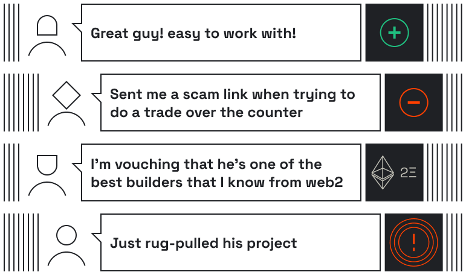
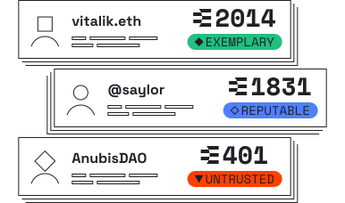
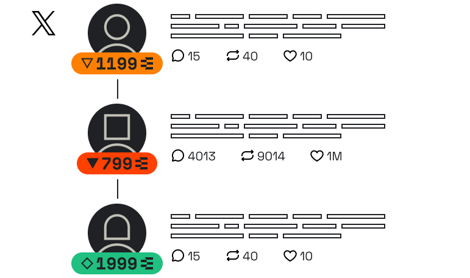
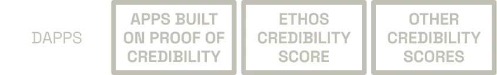

Ethos is a credibility platform that creates a more trusted web3 ecosystem.
Contribute & earn by building your reputation, backing others or penalizing bad actors.
Use the Ethos credibility score to better understand who you can trust and who to avoid.
Lost in 2025 due to crypto fraud
Almost $100m is lost DAILY in crypto due to various types of scams and fraud. > View reports
Ethos enables users to easily document and record who can be trusted and who to avoid through novel new onchain mechanisms like reviewing, vouching and slashing.
These mechanisms enable Ethos to calculate meaningful “Credibility Scores” to help crypto participants better understand reputation at a glance.
The Ethos credibility score can be integrated into any crypto engagement platform, including the Chrome integration that can show scores on Twitter and other sites.



Leave simple thumbs up, thumbs down or neutral reviews for anyone.
Minor impact on credibility score in isolation, but can have a major impact over time, from the right people, and in volume.
Deposit & stake Ethereum in other participants to show the network who you really believe in through vouching.
Major impact on credibility score.
Did someone in crypto step out of line? If they participate in Ethos, you can propose they are slashed and they can lose Ethereum they have staked in the network after a vote.
Major impact on credibility score.
The acts of reviewing, slashing and vouching help instrument objective peer-to-peer measurements that combine to create the Ethos Credibility Score.
An easy-to-read signal if a particular person can be trusted, or not.
The Ethos Credibility Score is the first dApp built on the Ethos Network. We’ve designed Ethos to be extensible to other interfaces and dApps by building the infrastructure onchain.
Developers can write reviews, vouches and slashes directly to Ethos’ smart contract, from any interface.
Want to create your own credibility score? We support that too.

Fintech & web3Brand, Web design, Development